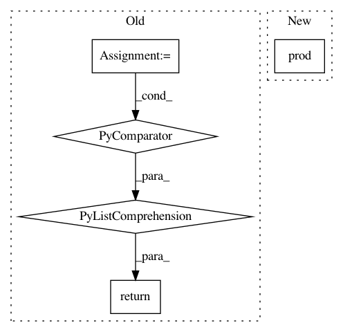

135a56e0935fbb04811f8ce7b9f514f498212f71,niftynet/layer/crf.py,,ftheta,#Any#Any#Any#Any#Any#Any#,148
Before Change
U.shape)
// Weighting Filter Outputs
Q2 = tf.add_n([Q1 * w for Q1, w in zip(Q1, kernel_weights)])
// Compatibility Transform
spatial_dim = infer_spatial_rank(U)
assert spatial_dim == 2 or 3, \
"Currently CRFAsRNNLayer supports 2D/3D images."
full_stride = expand_spatial_params(1, spatial_dim)
Q3 = tf.nn.convolution(input=Q2,
filter=mu,
strides=full_stride,
padding="SAME")
// Adding Unary Potentials
Q4 = U - Q3
// output logits, not the softmax
return Q4
def permutohedral_prepare(position_vectors):
After Change
:return: updated mean-field distribution
batch_size, n_ch = U.shape.as_list()[0], U.shape.as_list()[-1]
n_voxels = np.prod(U.shape.as_list()[:-1])
H1 = tf.reshape(tf.nn.softmax(H1), [batch_size, -1, n_ch])
Q1 = 0
for idx, permutohedral in enumerate(permutohedrals):
In pattern: SUPERPATTERN
Frequency: 3
Non-data size: 5
Instances
Project Name: NifTK/NiftyNet
Commit Name: 135a56e0935fbb04811f8ce7b9f514f498212f71
Time: 2018-07-25
Author: wenqi.li@ucl.ac.uk
File Name: niftynet/layer/crf.py
Class Name:
Method Name: ftheta
Project Name: keras-team/keras
Commit Name: f11b422541cb68857d6f62ab667d7778f3f3e3a2
Time: 2017-10-23
Author: ozabluda@gmail.com
File Name: keras/backend/tensorflow_backend.py
Class Name:
Method Name: count_params
Project Name: keras-team/keras
Commit Name: f11b422541cb68857d6f62ab667d7778f3f3e3a2
Time: 2017-10-23
Author: ozabluda@gmail.com
File Name: keras/backend/cntk_backend.py
Class Name:
Method Name: count_params